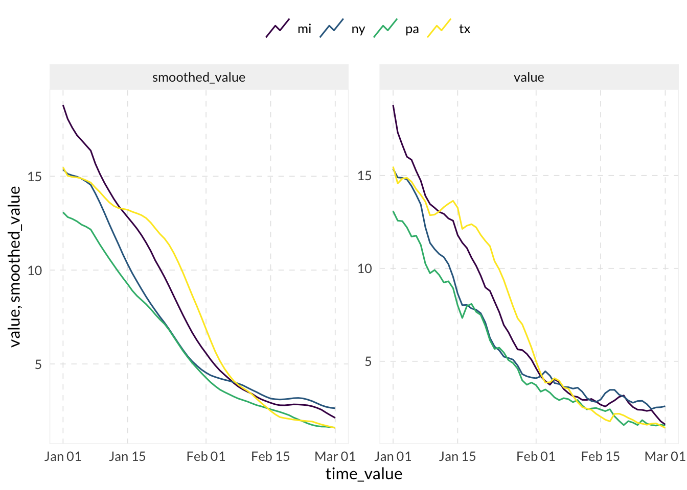
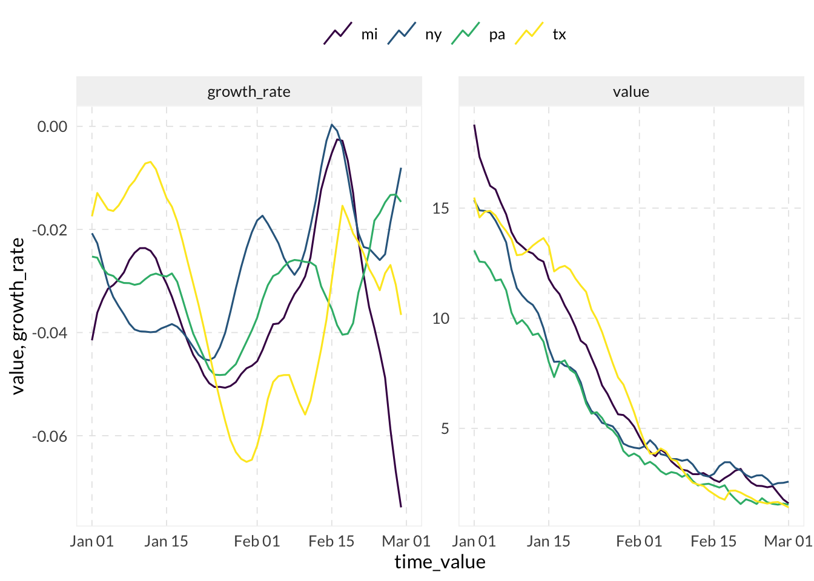
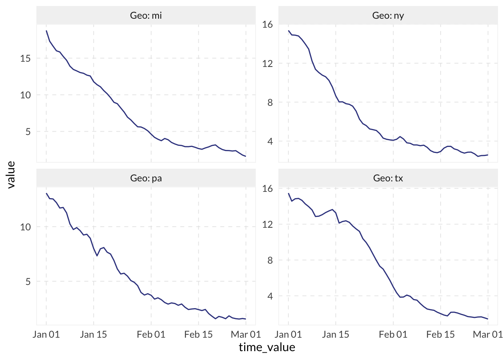
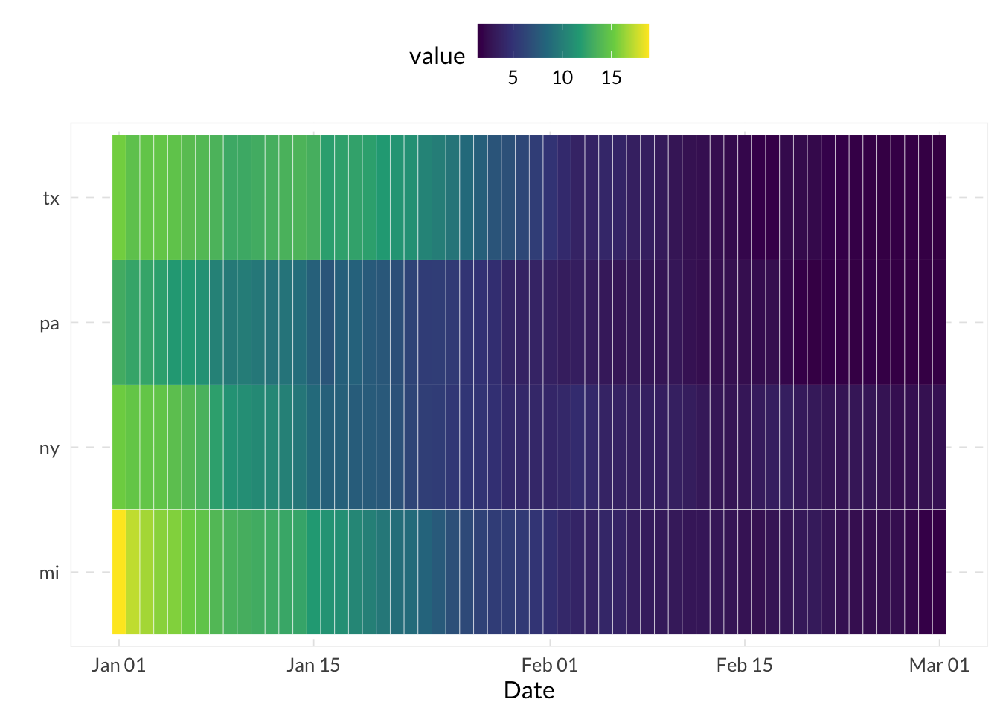
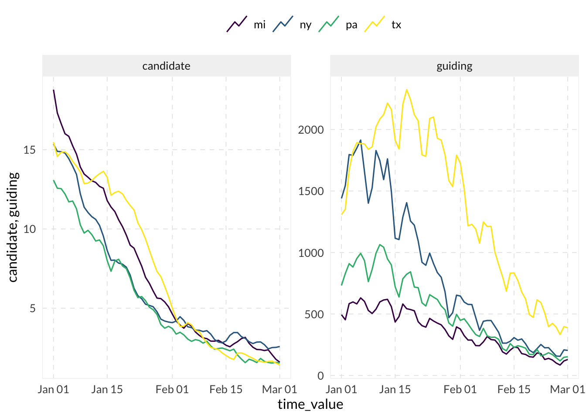
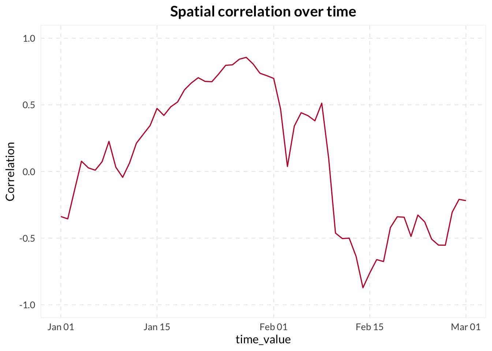
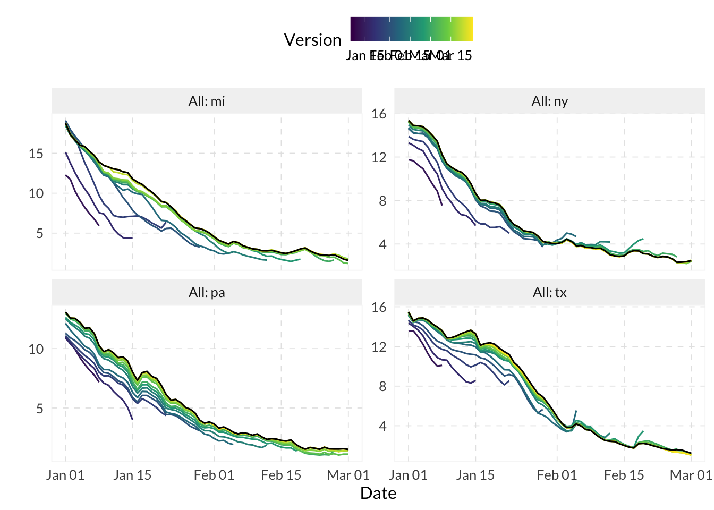

if (!requireNamespace("pak", quietly = TRUE)) install.packages("pak")
pkgs <- c(
epidatr = "cmu-delphi/epidatr",
epiprocess = "cmu-delphi/epiprocess",
dplyr = "dplyr",
ggplot2 = "ggplot2"
)
if (any(missing <- !vapply(names(pkgs), requireNamespace, quietly = TRUE, logical(1)))) {
pak::pkg_install(pkgs[missing])
}
invisible(lapply(names(pkgs), library, character.only = TRUE))MINI-PROJECT 2: EDA and correlation analysis
Introduction
This notebook covers the second mini-project, focusing on exploratory data analysis (EDA) and correlation analysis of Delphi indicators.
Load packages
We’ll start by loading the necessary packages.
Standard Timeframe
We define a standard timeframe for our analysis.
start_date <- 20220101
end_date <- 20220301General EDA utilities
First, we fetch a candidate indicator (Doctor visits CLI) to explore.
res_cand <- pub_covidcast("doctor-visits", "smoothed_adj_cli", "state", "day",
geo_values = c("mi", "ny", "tx", "pa"),
time_values = epirange(start_date, end_date)
)
edf_cand <- as_epi_df(res_cand)
head(edf_cand)An `epi_df` object, 6 x 15 with metadata:
* geo_type = state
* time_type = day
* as_of = 2022-05-11
# A tibble: 6 × 15
geo_value time_value signal source geo_type time_type direction issue
<chr> <date> <chr> <chr> <fct> <fct> <dbl> <date>
1 mi 2022-01-01 smoothed_… docto… state day NA 2022-03-15
2 ny 2022-01-01 smoothed_… docto… state day NA 2022-03-15
3 pa 2022-01-01 smoothed_… docto… state day NA 2022-03-15
4 tx 2022-01-01 smoothed_… docto… state day NA 2022-03-15
5 mi 2022-01-02 smoothed_… docto… state day NA 2022-03-16
6 ny 2022-01-02 smoothed_… docto… state day NA 2022-03-16
# ℹ 7 more variables: lag <dbl>, missing_value <dbl>, missing_stderr <dbl>,
# missing_sample_size <dbl>, value <dbl>, stderr <dbl>, sample_size <dbl>Sliding Averages and Growth Rates
We use epi_slide to calculate moving averages and growth rates.
# Use epi_slide to calculate moving averages
edf_cand |>
group_by(geo_value) |>
epi_slide(smoothed_value = mean(value, na.rm = TRUE), .window_size = 7) |>
autoplot(value, smoothed_value)
# Use epi_slide to calculate growth rate
edf_cand |>
group_by(geo_value) |>
mutate(growth_rate = growth_rate(value, time_value, method = "rel_change")) |>
autoplot(value, growth_rate)
Summary Statistics and Visualization
General summary statistics and data exploration using autoplot and plot_heatmap.
# Get general summary statistics
summary(edf_cand)An `epi_df` x, with metadata:
* geo_type = state
* as_of = 2022-05-11
----------
* min time value = 2022-01-01
* max time value = 2022-03-01
* average rows per time value = 4# Use autoplot and plot_heatmap to explore the data.
autoplot(edf_cand, value, .facet_by = "geo_value")
autoplot(edf_cand, value, .interactive = T)plot_heatmap(edf_cand, value)
Compare two indicators
We fetch a second indicator (HHS COVID admissions) and join them into a single epi_df.
res_guid <- pub_covidcast("hhs", "confirmed_admissions_covid_1d", "state", "day",
geo_values = c("mi", "ny", "tx", "pa"),
time_values = epirange(start_date, end_date)
)
edf_guid <- as_epi_df(res_guid)
joined_edf <- edf_cand |>
select(geo_value, time_value, candidate = value) |>
full_join(
edf_guid |> select(geo_value, time_value, guiding = value),
by = c("geo_value", "time_value")
) |>
as_epi_df()
# autoplot with two indicators
autoplot(joined_edf, candidate, guiding)
Correlation Analysis
We calculate correlations using epiprocess::epi_cor.
## Temporal correlation (within each location over time)
cor_temporal <- epi_cor(joined_edf, candidate, guiding, cor_by = geo_value)
head(cor_temporal)# A tibble: 4 × 2
geo_value cor
<chr> <dbl>
1 mi 0.898
2 ny 0.944
3 pa 0.937
4 tx 0.853## Spatial correlation (across all locations at each point in time)
cor_spatial <- epi_cor(joined_edf, candidate, guiding, cor_by = time_value)
ggplot(cor_spatial, aes(x = time_value, y = cor)) +
geom_line() +
labs(title = "Spatial correlation over time", y = "Correlation") +
scale_y_continuous(limits = c(-1, 1))
Lagged Correlation Analysis
We sweep lags from -14 to +14 days to see if the candidate leads the guiding indicator.
# Sweep lags from -14 to +14 days
# Positive means candidate leads guiding
cor_lagged <- lapply(-14:14, \(x) {
epi_cor(joined_edf, candidate, guiding,
cor_by = geo_value, dt1 = -x
) |> mutate(lag = x)
}) |> bind_rows()
cor_lagged |>
group_by(lag) |>
summarize(mean_cor = mean(cor, na.rm = TRUE)) |>
ggplot(aes(x = lag, y = mean_cor)) +
geom_line() +
geom_point() +
geom_vline(xintercept = 0, linetype = "dashed", color = "grey50") +
scale_y_continuous(limits = c(-1, 1)) +
labs(title = "Mean correlation vs. lag", x = "Lag (days)", y = "Correlation")
Revision behavior
Finally, we analyze the revision history of the candidate indicator.
# Fetch data versions by setting the issues parameter
archive_res <- pub_covidcast("doctor-visits", "smoothed_adj_cli",
"state", "day",
geo_values = c("mi", "ny", "tx", "pa"),
time_values = epirange(start_date, end_date),
issues = epirange(start_date, 20220401)
)
# For version processing
archive_data <- archive_res |>
rename(version = issue) |>
as_epi_archive()
# Plot the revision history
autoplot(archive_data, value, .versions = "week")
# Generate revision metrics
rev_metrics <- revision_analysis(archive_data, value)
rev_metrics min median mean max
4 days 4 days 4.4 days 8 days min median mean max
4 days 17 days 16.2 days 27 days